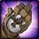

هاتفیکسهای ۱۳ نوامبر ۲۰۲۶ برای WoW: Forever منتشر شد
بلیزارد مجموعهای از هاتفیکسهای جدید را برای رفع باگهای کلاسها، دانجنها، کوئستها و آیتمها در WoW: Forever اعمال کرد.

بهروزرسانی تازهٔ سرورهای WoW: Forever در تاریخ ۱۳ نوامبر ۲۰۲۶ روی سرورها قرار گرفت. این پچ شامل برطرفسازی باگهای مکانیک Diminishing Returns، تغییراتی در دانجنها و مابها، اصلاح آمار آیتمها و افزایش تعداد برندگان رویداد ماهیگیری است.
تغییرات و رفع باگ کلاسها
در بخش عمومی کلاسها، باگی که مانع اعمال Diminishing Returns روی Stun موجودات علیه بازیکنان و همچنین Stun بازیکنان علیه موجودات میشد برطرف شده است. در رابط کاربری نیز مشکل ریست شدن تنظیمات Action Bar هنگام خروج بازیکنان دارای Secondary Talents رفع شد.
- کلاس Druid در شاخه Restoration: رفع باگ امکان کست Wild Growth حین حرکت؛ ضریب اسپل هیلینگ Wild Growth از 3.3% به 6.6% افزایش یافت.
- کلاس Mage: اثر Frost Nova اکنون به درستی با دمیج ناشی از Procها و دمیج Blizzard شکسته میشود.
- کلاس Paladin: قابلیت Judgement of Command اکنون افکتهای On-hit را فعال میکند و حمله Melee محسوب میشود.
- کلاس Priest: پرک The Quick and the Dead از بخش Legacy اکنون هزینه مانای Divine Spirit را به درستی کاهش میدهد.
- کلاس Shaman: توتم Windfury Totem اکنون با تمام قابلیتهای Melee فعال میشود، حتی اگر سلاح Main-hand درگیر نباشد.
- کلاس Warlock: رنک یک اسپل Siphon Life دیگر در وضعیت Silenced قابل کست نیست.
- کلاس Warrior: قابلیت Berserker Rage اکنون اثر Sap را پاک میکند.
سایر Judgementها همچنان حمله Ranged محسوب میشوند تا ویژگی خاص Command حفظ شود. در این بازی برخلاف حالت اصلی، همه Sealهای دیگر حمله Ranged به شمار میآیند. همچنین ضربات ناشی از سلاح Off-hand در اسپلهایی مثل Whirlwind یا Mutilate شانسی برای فعالسازی Windfury ندارند، اما ضربه Main-hand همچنان این شانس را دارد.
Blizzard
تغییرات دانجنها و جهان بازی
کشتن مابها در دانجن در صورتی که لول دشمن نسبت به لول یک یا چند نفر از اعضای گروه Trivial باشد، هیچ Experienceی به هیچکدام از اعضا نمیدهد. در The Deadmines خروج Sneed هنگام استن شدن Sneed's Shredder در صفر درصد هلث اصلاح شد. زمان ریسپاون مابهای غیرباس در The Drowned City از ۱ ساعت به ۲ ساعت تغییر یافت و شکست Balnazzar در Stratholme برای چالش Legacy با نام Master Spelunker محاسبه میشود.
- کاهش ریسپاون Techbot برای کوئست Save Techbot's Brain! در Gnomeregan
- افزایش سرعت ریسپاون Lesser Rock Elemental در Badlands و ببر، پنتر و رپتور در Stranglethorn Vale
- کاهش نرخ اسپاون و پرخاشگری Quillboar و Venture Co. در منطقه آغازین Mulgore
- حذف لوت از نگهبانان Nethergarde Keep در Blasted Lands و یکسانسازی رفتار آنها با سایر گاردها
آیتمها و مسابقه ماهیگیری
توضیحات و رفتار  Glimmering Mithril Insignia برداشته شد، سلاح
Glimmering Mithril Insignia برداشته شد، سلاح  Taran Icebreaker به پتک دودست تبدیل شد، تکسچر Cloak of the Fleshborer اضافه گردید و استت آیتمهای مختلفی نظیر دستههای انگشتر Darkspear، آیتم Everstaring Abomination Eye، کلاه The Bad Hat و The Souvenir Sea Shell تصحیح شد.
Taran Icebreaker به پتک دودست تبدیل شد، تکسچر Cloak of the Fleshborer اضافه گردید و استت آیتمهای مختلفی نظیر دستههای انگشتر Darkspear، آیتم Everstaring Abomination Eye، کلاه The Bad Hat و The Souvenir Sea Shell تصحیح شد.
آمار Hit از روی Blessed Band of Light حذف شده و Channeler's Ring به جای Spirit دارای اسپل پاور است. بازیکنان میتوانند تا زمان بازگشایی ریدها، این دو حلقه را نزد وندور Pix Xizzix با یکدیگر معاوضه کنند؛ این تغییر غیرقابل بازگشت است.
در مسابقه هفتگی Stranglethorn Fishing Extravaganza نیز ظرفیت برندگان به ازای هر رولست بهطور چشمگیری افزایش یافته است تا بازیکنان بیشتری شانس پیروزی داشته باشند.